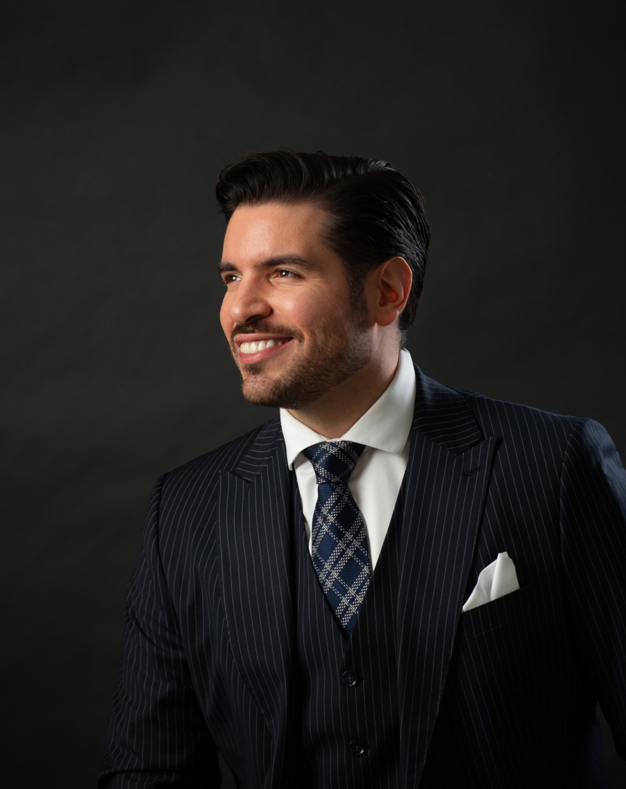

Venezuelan tenor Reinaldo Droz has appeared in leading lyric and dramatic tenor roles across Italy, Bulgaria, Moldova, Switzerland, Germany, Venezuela and beyond. Recent highlights include Alfredo in La traviata, the Duke of Mantua in Rigoletto, Rodolfo in La bohème and Cavaradossi in Tosca.
Previous engagements include Macduff in Macbeth at the Opera of Biel and Solothurn and Varna Opera; Fenton in Falstaff at Varna Opera and Sofia Opera; Roméo in Roméo et Juliette, Faust in Faust, Rinuccio in Gianni Schicchi and the Prince in Rusalka at Varna Opera; Gérald in Lakmé at Sofia Opera; Ernesto in Don Pasquale at Sofia Opera and Varna Opera; and Nemorino in L’elisir d’amore at the Teresa Carreño Theatre in Caracas and in Civitanova.
His concert repertoire includes Mozart’s Requiem with Varna Opera and the Pleven Philharmonic, Leoncavallo’s Requiem at the Pavarotti-Freni Theatre in Modena, and Beethoven’s Ninth Symphony with Varna Opera and in Medellín. He has also appeared with the Sofia Philharmonic and Venezuela’s Sistema Nacional de Orquestas.
Droz won the 2021 Gena Dimitrova Competition and the 2022 Anita Cerquetti Competition. His forthcoming engagements include a debut as Don Carlo in Verdi’s Don Carlo at Varna Opera.
Performance video 1 · Watch on YouTube ↗
Performance video 2 · Watch on YouTube ↗
Performance video 3 · Watch on YouTube ↗
Performance video 4 · Watch on YouTube ↗
